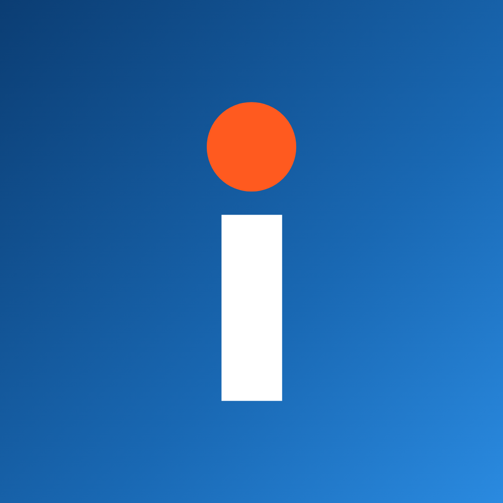
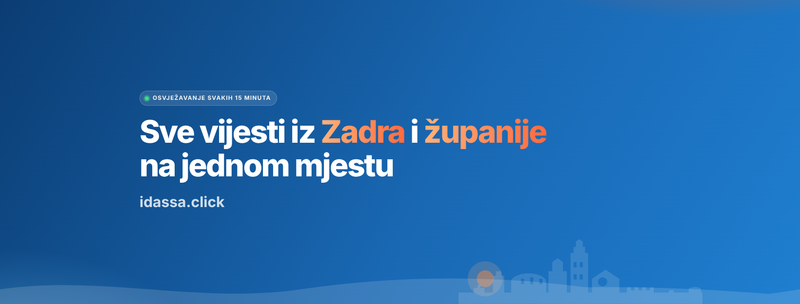
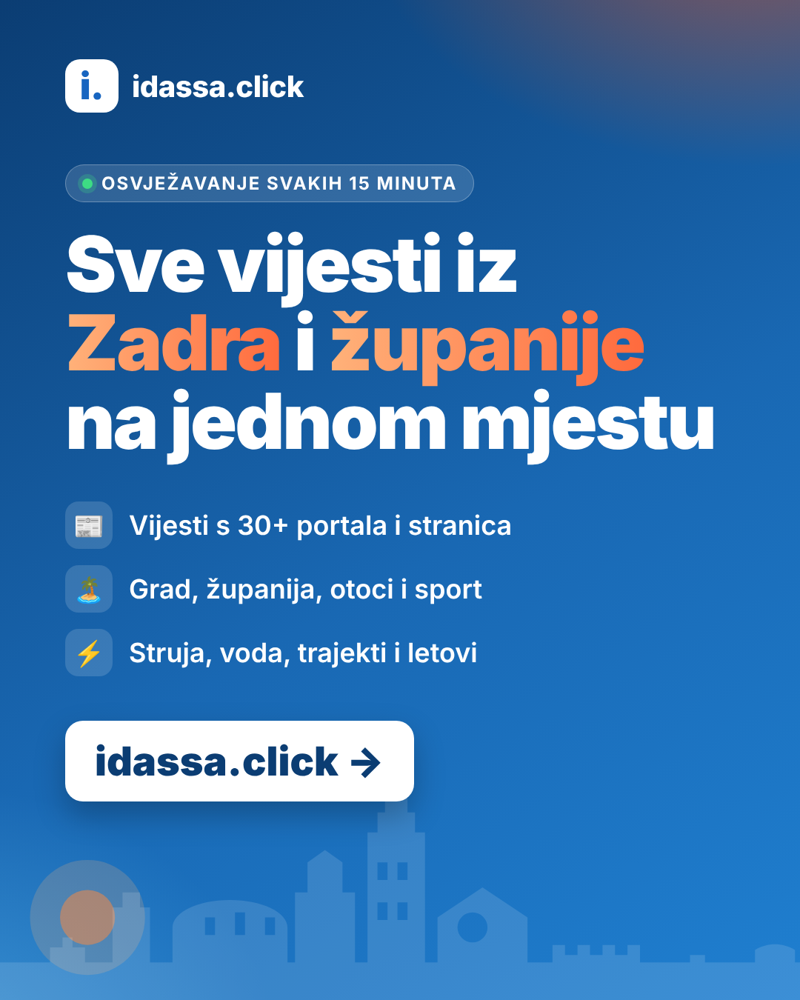

Facebook stranica za idassa.click
Slike preuzmi dugim pritiskom na sliku ili gumbom "Preuzmi".
Profilna slika

Preuzmi profilnuNaslovna slika (1640 × 624)

Preuzmi naslovnuGrafika za prvu objavu (1080 × 1350)

Preuzmi grafikuKoraci
- Facebook → Izbornik ☰ → Stranice → Stvori (ili facebook.com/pages/create)
- Naziv: idassa.click – vijesti iz Zadra
- Kategorija: Web stranica s vijestima i medijima
- Bio: tekst ispod
- Dodaj profilnu i naslovnu sliku
- Kontakt: web https://idassa.click, e-mail hello@idassa.click, lokacija Zadar
- Dodaj gumb → "Posjeti web stranicu" → https://idassa.click
- Postavke → Korisničko ime: npr. idassa.click
Bio
Sve vijesti iz Zadra i Zadarske županije na jednom mjestu. Osvježavanje svakih 15 minuta.
Prva objava
Pokrenuli smo idassa.click 📰
Sve vijesti iz Zadra, županije i s otoka s lokalnih portala na jednom mjestu. Tu su i sport, struja, voda, trajekti, letovi i vrijeme. Stranica se osvježava svakih 15 minuta.
👉 https://idassa.click
#Zadar #ZadarskaŽupanija #vijesti